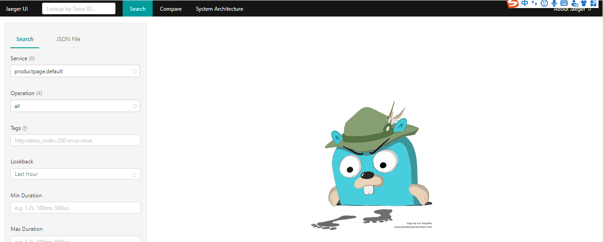
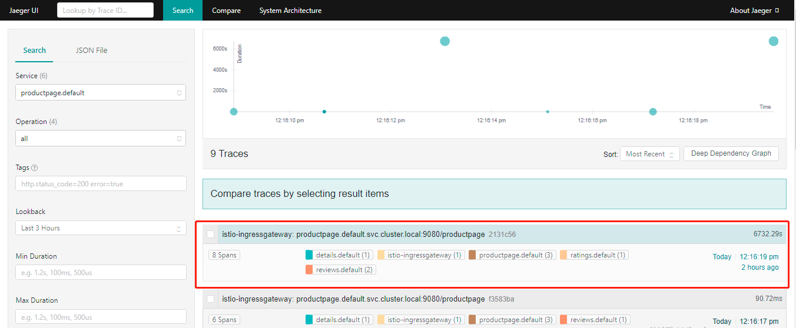
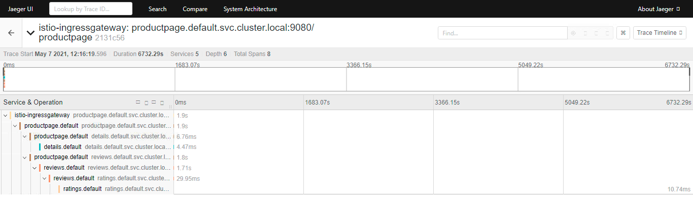

分布式追踪
分布式追踪通过监控流经网格的单个请求，提供了一种监控和理解行为的方法。追踪使网格的运维人员能够理解服务的依赖关系以及在服务网格中的延迟源。
Istio 支持通过 Envoy 代理进行分布式追踪。代理自动为其应用程序生成追踪 span，只需要应用程序转发适当的请求上下文即可。
Istio 支持很多追踪系统，包括 Zipkin， Jaeger，Lightstep和 Datadog。
1、Jaeger
Jaeger 是由 Uber 开源的分布式追踪系统，它采用 Go 语言编写，主要借鉴了 Google Dapper 论文和 Zipkin 的设计，兼容 OpenTracing 以及 Zipkin 追踪格式，目前已成为 CNCF 基金会的开源项目。
Jaeger 主要包括以下三部分：
Trace：用来描述在分布式系统中一个完整的调用链，每一个Trace会有一个独有的Trace ID。一个端到端的Trace由一个或多个 Span 组成。Span：Span是Jaeger的逻辑工作单元，可以是一个微服务中的service，也可以是一次方法调用，甚至一个简单的代码块调用。具有请求名称、请求开始时间、请求持续时间。每一个Span会有一个独有的Span ID。Span会被嵌套并排序以展示服务间的关系。

Span Context：含额外Trace信息的数据结构，span context可以包含Trace ID、Span ID，以及其他任何需要向下游服务传递的Trace信息。
1.1 Envoy 分布式追踪 Jaeger 的实现
Envoy 原生支持 Jaeger，追踪所需 x-b3 开头的 Header 和 x-request-id 在不同的服务之间由业务逻辑进行传递，并由 Envoy 上报给 Jaeger，最终 Jaeger 生成完整的追踪信息。
为了将各种追踪 span 整合在一起以获得完整的追踪图，应用程序必须在传入和传出请求之间传播追踪上下文信息。特别是，Istio 依赖于应用程序传播 b3 追踪 Header 以及由 Envoy 生成的请求 ID，即应用程序服务请求时需携带这些 Header。这些 Header 包括：
x-request-idx-b3-traceidx-b3-spanIdx-b3-parentspanidx-b3-sampledx-b3-flagsb3
如果请求中没有 B3 HTTP Header，Istio Sidecar 代理(Envoy) 会自动生成初始化的 Headers。
在 Istio 中，Envoy 和 Jaeger 的关系如下：
{kind=link}
上图中 Front Envoy 指的是第一个接收到请求的 Envoy Sidecar，它会负责创建 Root Span 并追加到请求 Header 内，请求到达不同的服务时，Envoy Sidecar 会将追踪信息进行上报。
Jaeger 的内部组件架构与 EFK 日志系统架构有一定相似性：
{kind=link}
Jaeger 主要由以下几个组件构成：
Client：Jaeger客户端，是OpenTracing API的具体语言实现，可以为各种开源框架提供分布式追踪工具。Agent：监听在UDP端口的守护进程，以Daemonset的方式部署在宿主机或以Sidecar方式注入容器内，屏蔽了Client和Collector之间的细节以及服务发现。用于接收Client发送过来的追踪数据，并将数据批量发送至Collector。Collector：用来接收Agent发送的数据，验证追踪数据，并建立索引，最后异步地写入后端存储，Collector是无状态的。DataBase：后端存储组件，支持内存、Cassandra、Elasticsearch、Kafka的存储方式。Query：用于接收查询请求，从数据库检索数据并通过UI展示。UI：使用React编写，用于UI界面展示。
在 Istio 提供“开箱即用”的追踪环境中，Jaeger 的部署方式是 all-in-one 的方式。该模式下部署的 Pod 为 jaeger，使用的是 jaegertracing/all-in-one 镜像，包含：Jaeger-agent、Jaeger-collector、Jaeger-query(UI) 几个组件。
不同的是，Bookinfo 的业务代码并没有集成 Jaeger-client ，而是由 Envoy 将追踪信息直接上报到 Jaeger-collector，另外，存储方式默认为内存，随着 Pod 销毁，追踪数据将会被删除。
1.2 Jaeger 部署和验证
Jaeger 的部署方式主要有以下几种：
all-in-one部署：适用于快速体验Jaeger，所有追踪数据存储在内存中，不适用于生产环境。在Istio的demo环境中，就是采用该种部署方式。Kubernetes部署：通过在集群独立部署Jaeger各组件manifest完成，定制化程度高，可使用已有的Elasticsearch、Kafka服务，适用于生产环境。OpenTelemetry部署：适用于使用OpenTelemetry API的部署方式。Windows部署：适用于Windows环境的部署方式，通过运行exe可执行文件安装和配置。
Jaeger 部署
Istio 的 demo 环境中，默认是没有部署 Jaeger，需要手动额外部署。（Istio 的老版本中，默认会自动部署）
确认
trace采样率。如使用
demo配置安装Istio，即：istioctl install --set profile=demo方式安装，trace采样率通过环境变量PILOT_TRACE_SAMPLING设置，demo环境默认设置为100，即：100%采样所有请求。demo环境默认采样率可通过mainfests\proiles\demo.yaml文件，查看环境变量PILOT_TRACE_SAMPLING的配置值。注意：你也可以通过
--set values.pilot.traceSampling=<Value>来配置采样率。Value范围在0.0到100.0之间，精度为0.01。例如，Value配置0.01意味着10000请求中跟踪1个请求。部署
Jaeger。执行
kubectl apply -f samples/addons/jaeger.yaml来安装Jaeger，此时会在istio-system的命名空间中部署Jaeger。访问
JaegerDashboard。执行
istioctl dashboard jaeger --address=<IP>命令启动dashboard，其中<ip>是该宿主机的IP地址，方便外部直接根据该IP访问，默认端口为16686。浏览器输入：
http://<IP>:16686，可直接访问JaegerDashboard。 图 8.3.4：jaeger-dashboard 验证。
以
BookInfo示例，访问/productpage页面，使得生成并上报调用链数据，默认 100% 的采样率，则请求一次即可产生追踪链路数据。请求完，在
JaegerDashboard，选择一个Service，如productpage.default，点击"Find Traces"按钮查询追踪结果。（如果查询不到数据，可将
"Lookback"选项的时间调大些） 图 8.3.5：jaeger-dashboard-1 点击其中的列表进入追踪详情，详细记录了一次请求涉及到的
Services、深度、Span总数、请求总时长等信息。也可以对下方的单项服务展开，观察每一个服务的请求耗时和详情。 图 8.3.6：jaeger-dashboard-2
{kind=link}
{kind=link}
{kind=link}